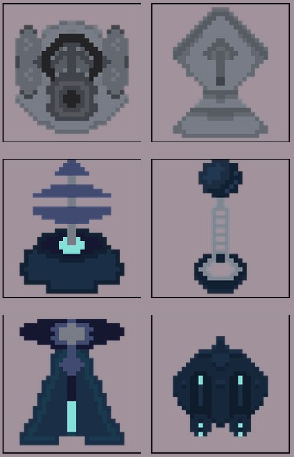
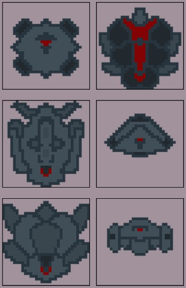
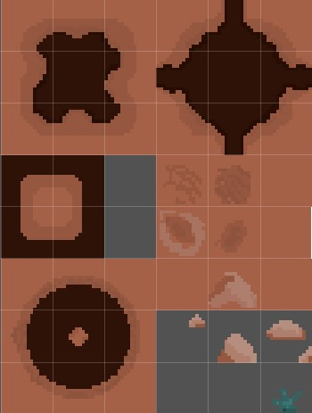
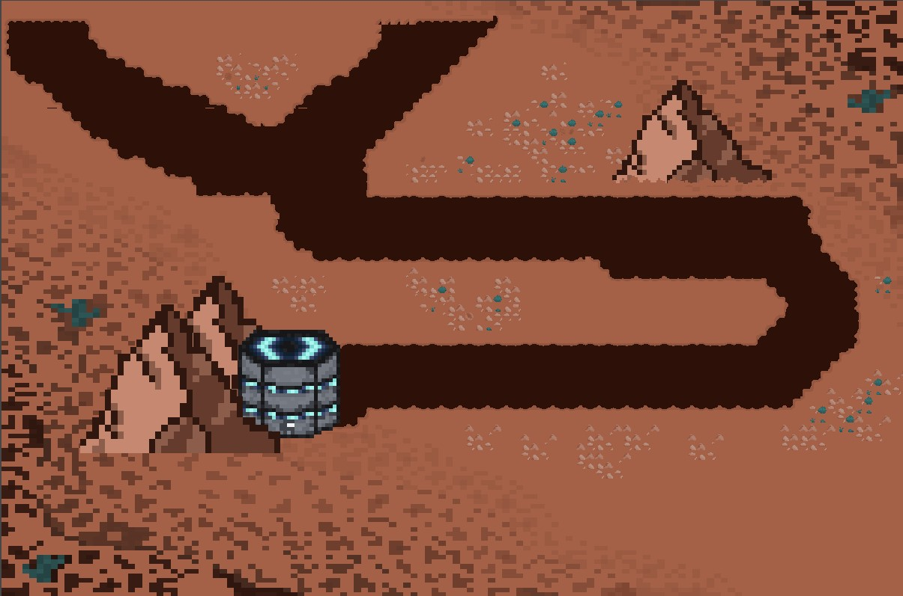
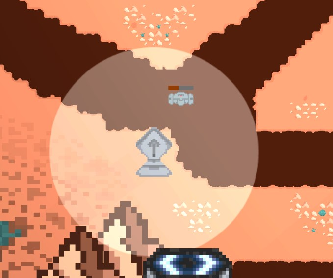
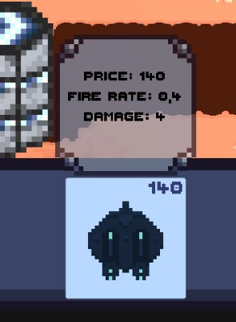
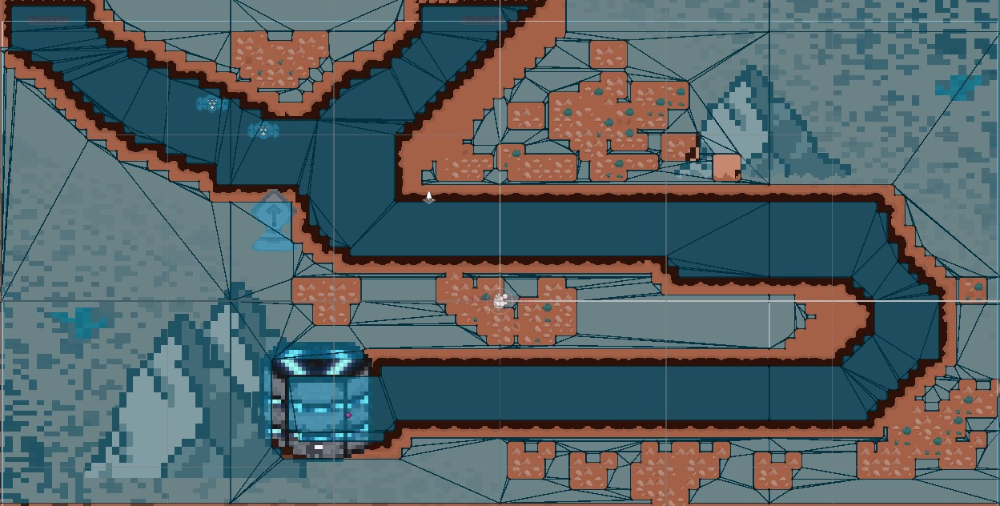
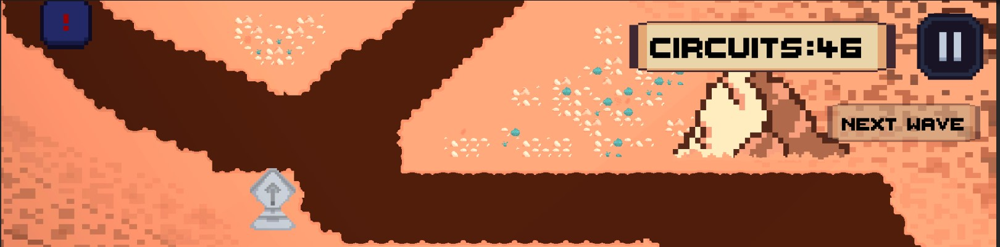
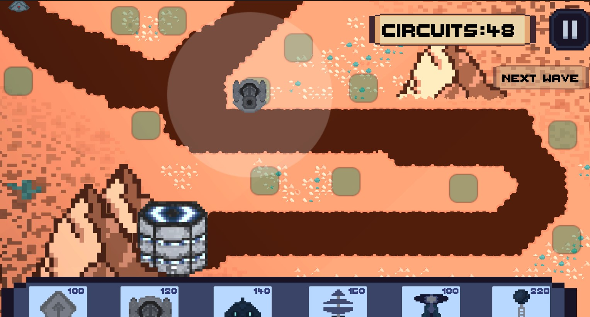

Gameplay showcase featuring tower placement, enemy waves, and the pixel art aesthetic.
The Context
FrelseTD is a tower defense game built with a pixel art style. The game challenges players to defend a path by strategically placing towers that attack waves of enemies. Each enemy type has unique behaviours and resistances, requiring players to adapt their strategy.
I worked on this project as the lead developer, taking full leadership of the art direction, programming, and interface design. This was a valuable opportunity to practice both creative and technical skills within a single cohesive project.
Pixel Art and Visual Design
I created all visual assets for FrelseTD, including characters, environments, towers, enemies, and UI elements. The pixel art style was chosen to create a cohesive retro aesthetic while keeping the asset creation pipeline manageable.
Towers and Enemies
Designed multiple tower types and enemy variants (basic, fast, armored, boss). Each unit was created with distinct silhouettes to ensure readability during gameplay.


Environment and Tiles
Built tile-based environments with a rocky tileset. The path is clearly distinguishable from terrain to help players plan tower placements effectively. Added decorative elements (mountains, rocks, flowers) to make the world feel alive.


All pixel art was created using Aseprite. The colour palette was limited to 64 colours to maintain consistency across all assets.
Programming: Towers, Enemies, and Pathfinding
The core gameplay loop relies on robust enemy behaviour and responsive tower targeting. I designed and implemented the entire system from the ground up.
Tower Behaviour
Implemented a modular tower system where each tower type has configurable stats (damage, range, fire rate, cost) Towers track enemies within range and fire projectiles with visual effects.


Enemy Behaviour and Pathing
Enemies follow a predefined path using navmesh navigation. Each enemy type has custom speed, health, and reward values.


Code Architecture
The system is built using object-oriented principles with base classes for Building, Enemy, and Projectile. ScriptableObjects are used for data-driven configuration, allowing designers (or future me) to tweak stats without touching code.
Click to see a simplified code snippet
public class Building : MonoBehaviour
{
[SerializeField] int cost;
private Scanner _scanner;
private Weapon _weapon;
public GameObject explosionPrefab;
private SpriteRenderer _spriteRenderer;
GameManager gm = GameManager.instance;
private void Awake()
{
_spriteRenderer = GetComponent();
_weapon = GetComponent();
_scanner = GetComponentInChildren();
}
private void Start()
{
InvokeRepeating(nameof(ScanEnemies), 0f, 0.1f);
}
private void Update()
{
if(_scanner.TargetFound())
{
_weapon.Shoot(_scanner.GetTarget());
}
}
private void ScanEnemies()
{
_scanner.Scan();
}
} Interfaces and UI Implementation
I designed and implemented all user interfaces, ensuring that players have clear feedback and control over their defensive strategy.
Tower Placement, HUD and Resources Interface
Built a drag-and-drop tower placement system with visual indicators (valid/invalid placement zones). The interface shows tower stats and cost before placement, and players can select, or sell existing towers.

Design Principles Applied
- Clarity: All interactive elements are visually distinct and labelled clearly.
- Feedback: Visual and audio feedback for tower placement, enemy hits, and wave progression.
- Accessibility: Colour‑blind friendly palette and scalable UI elements.
- Consistency: UI follows the pixel art aesthetic with custom fonts and retro‑styled buttons.
Outcome and Learnings
FrelseTD was a valuable project that allowed me to develop a complete game from concept to playable prototype. The project reinforced my skills in both art and programming while teaching me to balance creative and technical constraints.
- Art Production: Gained confidence in pixel art creation and animation, learning to work efficiently with limited palettes and sprite sizes.
- Game Programming: Strengthened my understanding of pathfinding, AI behaviour, and modular system design.
- UI/UX: Learned to design interfaces that are functional, attractive, and consistent with the game's visual style.
- Project Management: Developed the discipline to scope features appropriately and deliver a polished product.
The source code is currently private, but a playable demo may be available upon request.